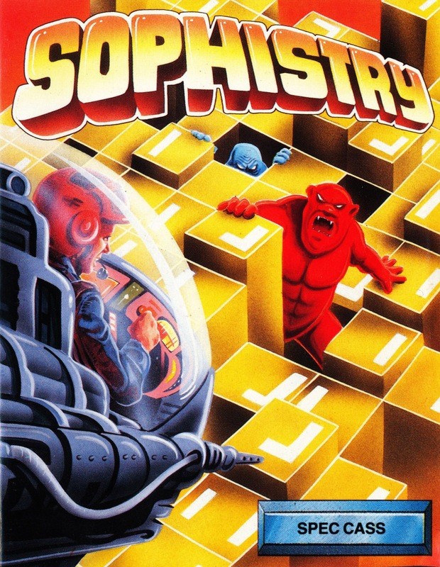
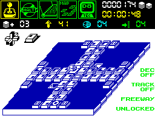
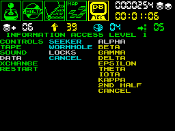

Sophistry


{kind=link}

| Publisher: | CRL |
| Price: | £7.95 |
| Year: | 1988 |
| Source: | CRASH, Issue 52 |

Sophistry takes place in a complex of 21 abstract levels. Each level comprises several interconnected 3-D game boards consisting of marked blocks. At the beginning of the game only 20% of the structure is opened up. The player’s objective is to obtain the 64 keys scattered throughout the environment which will unlock the gates leading to the 21st level and open the construction 100%. This can be achieved by retrieving the keys in person or by amassing points to trade for them.

The player takes control of small pod-like craft capable of moving in all four directions. As it jumps across the blocks their different attributes are activated; scoring blocks and target blocks increase points. Landing on blocks and jokers, in various sequences of ascending and descending order, gains bonus points. Missing a block or attempting to leave the board at an unmarked exit results in the loss of one of five lives.
The basic concept of search and find is complicated by the properties peculiar to each block. A status panel to the left of the screen indicates whether certain restrictions are in operation or not. On some boards exits are locked and cannot be opened until a certain number of points have been scored or a specified period of time has been spent on the current board. Conversely, other boards must be cleared before a stopwatch countdown reaches zero.

Other features include mystery blocks (a variety of beneficial and adverse effects), false exits and seekers; contact with the latter means instant death. Tracking status determines how much strategic thinking is necessary to negotiate each board. A random chain reaction which creates fatal low blocks, a force which keeps the pod moving until it hits a target and sudden countdowns are just a few of the problems to be encountered. In trickier situations one of the player’s 50 uppers may be activated. These increase the value of all scoring blocks by one and occasionally recover blocks which have disappeared.
In between boards, the player can exchange points for extra uppers, the elimination of seekers, the opening of locks or bonus lives. A map and selective instructions can also be consulted. On-screen displays indicate current level, number of lives and uppers remaining, game time and score.
CRITICISM
“Sophistry is complex, compelling and original. It derives its tactical elements from games like patience and chess and makes ingenious use of its three dimensions. The graphics are polished; the pod hops smoothly from brick to brick and the texture of the squares is innovatively exploited. The various tracking and locking features, block sequences and restrictions add incredible depth to the basic board game principle. Flexibility is all — there are endless possibilities for complicated variations. Success depends on a wide range of skills: some screens require quick reactions and joystick control as well as strategy and logical thought. Fortunately there are more ways than one of conquering the complex, so if you can’t see your way through a particularly tough screen the game doesn’t just grind to a halt. My only quibble regards the instructions which brim with informative detail but lack a straightforward explanation of the basic rules. Don’t let this put you off: the indecipherable information sheet hides a highly addictive, ingeniously devised game with a brain. If you’ve also got one, buy Sophistry.”
KATI
“It’s amazing how the quality of games can vary within a company. CRL, not exactly renowned for hundreds of awe-inspiring games, have certainly come up with the goods this time. Sophistry is not just another puzzle game — it requires a great amount of planning and thought, combined with arcade reactions and risk. Unlike most puzzle games the object is not as simple as it first seems. A great amount of mapping is required for anybody hoping to have a chance of getting anywhere with it. The presentation is very original — as with most games there are many options, but these can also be accessed from within the game, not just on the title screen. With such a wide combination of things that can happen on each of the screens it is impossible not to be enthralled by Sophistry. With this and Brainstorm on offer, puzzlers are in for a real treat this month.”
PAUL
“This game is packed full of variety and addictiveness. The 3-D playing board is a great idea and the way the little pod hops from one block to another is very smooth. Each block does something different and there are almost endless ways of completing the game so you can never get bored. The only thing that I found irritated me in Sophistry was the way the game went back to the title screen after you have left each board. I found this totally unnecessary. A special key that took you back would have worked just as well, if not better. Blocks that disappear when you touch them add an element of frustration to the game but this makes it even more fun when trying to correct your steps next time round. Sophistry is bursting with addictiveness just waiting to pounce out at any unsuspecting game buyer, watch out for it!”
NICK
COMMENTS
| Joystick: | Cursor, Kempston, Sinclair |
| Graphics: | Great 3-D perspective creates an involving atmosphere. Despite the small size of the characters they are superbly drawn and animated |
| Sound: | No tunes, but a wide range of impressive spot effects during the game |
| Options: | Definable keys |
| General rating: | A puzzling game, requiring quick and logical thinking, as well as a degree of risk. Its only infuriating fault is returning to the main menu after completing a screen |
| Presentation: | 86% |
| Graphics: | 80% |
| Playability: | 93% |
| Addictive qualities: | 91% |
| Overall: | 90% |